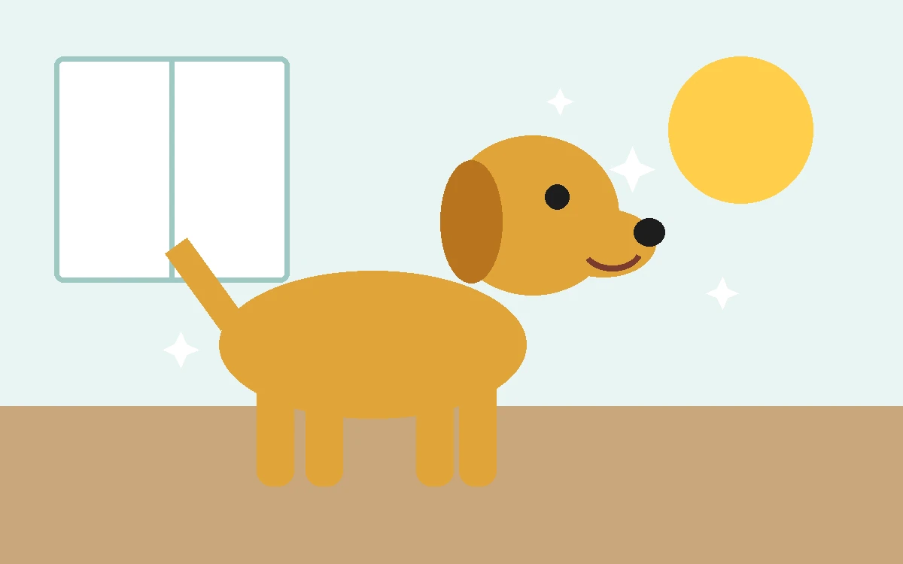

Dog grooming in Geelong West

Bayside Paws is a small, cage-free dog grooming salon in Geelong West. Every dog is groomed by hand by our qualified groomers, at your dog's pace.
What we offer
See our dog grooming prices, or read how often your dog should be groomed.
Why Geelong dog owners choose us
- Cage-free and calm: your dog is never left in a crate. We groom one dog at a time, so there's no barking chaos.
- Qualified groomers: our team holds a Certificate III in Companion Animal Services, and Mia spent ten years as a vet nurse.
- Gentle products: Australian-made, soap-free shampoos that are kind to sensitive skin.
- Honest prices: clear prices by dog size, and we always tell you before adding anything.
Popular with spoodles, cavoodles and shih tzus
Curly and long coats need grooming every 4 to 6 weeks to stay knot-free. We know these breeds well, from teddy-bear trims to practical short clips for summer. Short-coated dogs love our wash and blow-dry, which keeps shedding under control between baths at home.
Where we groom
We're on Pakington Street in Geelong West, a few minutes from Geelong, Newtown, Belmont, Highton and Hamlyn Heights.
Questions owners ask
How long does a groom take? A wash and blow-dry takes about an hour; a full groom takes two to three hours, depending on the coat.
Do you groom anxious dogs? Yes. We take it slowly, use quiet dryers and take breaks whenever your dog needs one.